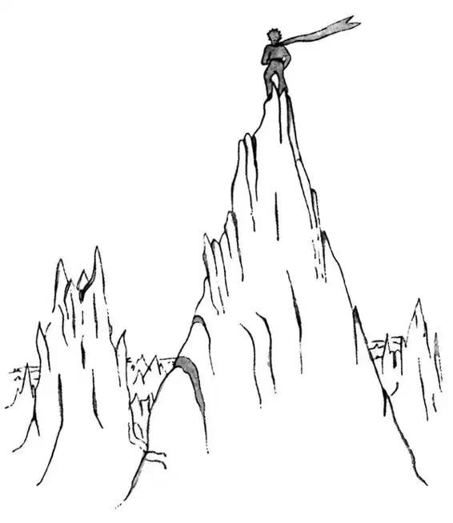

CHAPTER 19
第十九章
—the little prince climbs a mountain range
——小王子爬上山脊
After that, the little prince climbed a high mountain. The only mountains he had ever known were the three volcanoes, which came up to his knees. And he used the extinct volcano as a footstool. "From a mountain as high as this one," he said to himself, "I shall be able to see the whole planet at one glance, and all the people..."
后来，小王子爬上一座高山。他曾经知道的山只有那三座火山，只有他膝盖那么高。他把那座死火山当脚凳来用。“从这么高的一座山上，”他自言自语道，“我可以一眼就看尽整个星球所有的地方，看到所有的人……”
But he saw nothing, save peaks of rock that were sharpened like needles.
可是他什么也没有看到，只看到一些锋利得像针尖一样的石峰。
"Good morning," he said courteously.
“早上好。”他彬彬有礼地说。
"Good morning—Good morning—Good morning," answered the echo.
“早上好——早上好——早上好。”回音阵阵。
"Who are you?" said the little prince.
“你是谁？”小王子问。

"Who are you—Who are you—Who are you?" answered the echo.
“你是谁——你是谁——你是谁？”回音也如是问。
"Be my friends. I am all alone," he said.
“做我的朋友吧。我孤身一人。”他说。
"I am all alone—all alone—all alone," answered the echo.
“我孤身一人——孤身一人——孤身一人。”回音同样回答说。
"What a queer planet!" he thought. "It is altogether dry, and altogether pointed, and altogether harsh and forbidding. And the people have no imagination. They repeat whatever one says to them... On my planet I had a flower; she always was the first to speak..."
“多么奇怪的星球啊！”小王子心想。“它始终冷冰冰的，始终那么尖刻，始终那么严厉，令人生畏。人类没有什么想象力。他们重复着别人说的话……可在我的星球上，我有一朵花，她总是首先开口说话……”